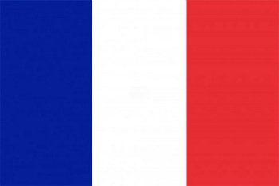
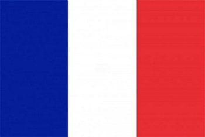

Austrália
A Austrália, oficialmente a Comunidade da Austrália, é um país soberano que compreende o continente australiano, a ilha da Tasmânia e várias ilhas menores. Com uma área de 7.617.930 quilômetros quadrados, a Austrália é o maior país em área da Oceania e o sexto maior país do mundo.